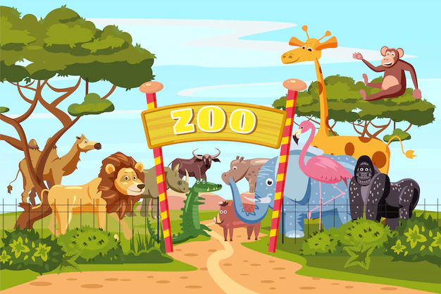

Bienvenidos al zoologico nacional, somos un parque con los mas altos estandares del manejo de los animales, para ello contamos con nuestra propia clinica veterinaria dentro, centro de nutricion y programas de entrenamiento y entretenimiento animal, tambien trabajamos con con fauna silvestre mediante programas de conservacion e investigacion y recibimos en nuestra clinica a animales rescatados
para una mayor experiencia de nuestros visitantes, ofrecemos un programa de exhibiciones y charlas publicas, actividad para escolares y eventos especiales en fechas destacadas durante el año.
la mision es inspirar a nuestro publico la diversidad de la vida y ver como son los animales en la vida real, te esperamos en esta oportunidad unica de conectarte con el mundo natural.
